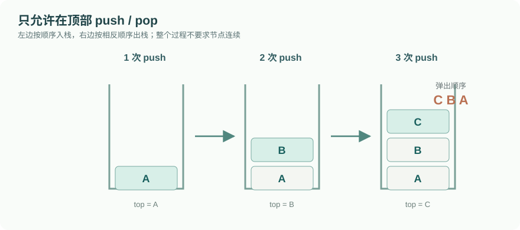
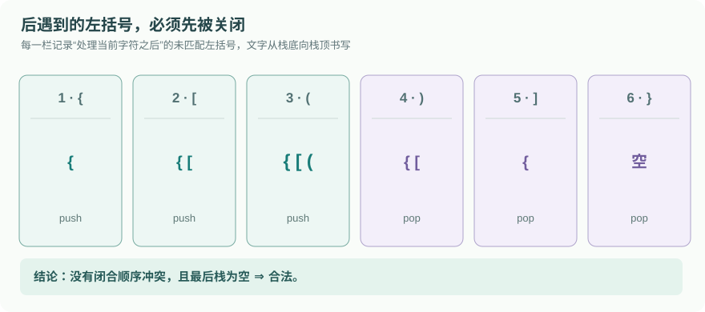
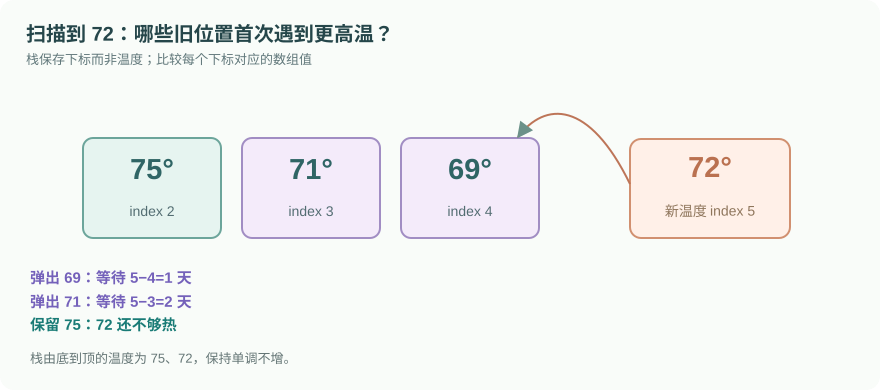

栈：从 LIFO 到单调栈的不变量
为什么递归能返回上一层？为什么最近更大元素不用扫描所有后缀？栈只暴露一端，但在合适的不变量下能把复杂搜索化成线性处理。
栈是操作约束，不是某一种物理容器
在编写文本编辑器的撤销功能时，最后一次修改必须最先撤销。假设操作顺序为 写入 A → 写入 B → 删除 A，点击一次“撤销”，应先恢复删除 A 的效果。这就是后进先出（Last In, First Out；LIFO）。
栈是抽象数据类型，核心操作只有 push(x)、pop() 和可选的 peek()。它可以由动态数组、链表甚至固定大小数组来实现。性能结论必须写明实现：Python list.append 均摊 O(1)、尾部 pop O(1)，而在列表开头 insert(0,x) 则要搬移槽位。

class Stack:
def __init__(self):
self._data = []
def push(self, value):
self._data.append(value)
def pop(self):
if not self._data:
raise IndexError("empty stack")
return self._data.pop()
def peek(self):
if not self._data:
raise IndexError("empty stack")
return self._data[-1]
s = Stack()
for x in ("A", "B", "C"):
s.push(x)
assert [s.pop(), s.pop(), s.pop()] == ["C", "B", "A"]括号匹配：保留尚未闭合的上下文
对字符串 "{[()]}"，每遇到左括号就把类型入栈；每遇到右括号，则要求栈顶恰好是对应的左括号。这种行为不是“算数量相等”就够："([)]" 虽然两种括号数量都平衡，但最后出现的左括号 [ 必须先被 ] 关闭，因此是非法嵌套。

def valid_brackets(text):
pairs = {")": "(", "]": "[", "}": "{"}
lefts = set(pairs.values())
stack = []
for ch in text:
if ch in lefts:
stack.append(ch)
elif ch in pairs:
if not stack or stack.pop() != pairs[ch]:
return False
else:
raise ValueError("only bracket tokens are allowed")
return not stack
assert valid_brackets("{[()]}") is True
assert valid_brackets("([)]") is False
assert valid_brackets("") is True循环不变量是：栈始终从下到上保存已经扫描、尚未配对的左括号。遇到非法右括号立刻失败；扫描完栈非空说明还有未闭合部分。时间 O(n)，最坏额外空间 O(n)。
手动推进一次扫描
输入 {[()]}，改变已扫描字符数，观察“未闭合左括号”的栈内容。
表达式求值：把中间结果压栈
在后缀表达式（Reverse Polish Notation, RPN）中，操作符位于操作数之后。例如 3 4 + 2 * 的意义是 (3+4)×2=14。扫描 token：遇数字入栈；遇二元运算符依次弹出右操作数 b 和左操作数 a，算完再把结果入栈。
def evaluate_rpn(tokens):
stack = []
for token in tokens:
if token in {"+", "-", "*"}:
if len(stack) < 2:
raise ValueError("missing operand")
b, a = stack.pop(), stack.pop()
value = {"+": lambda: a+b, "-": lambda: a-b,
"*": lambda: a*b}[token]()
stack.append(value)
else:
stack.append(int(token))
if len(stack) != 1:
raise ValueError("invalid expression")
return stack[0]
assert evaluate_rpn(["3", "4", "+", "2", "*"]) == 14
assert evaluate_rpn(["6", "2", "-"]) == 4注意先弹出的是右操作数。对于减法、除法等不满足交换律的运算符，顺序反转会改变结果。这里刻意只支持整数与三种运算，不把教学代码伪装成通用表达式解析器；现实系统还要处理一元负号、除零、函数和 token 化。
单调栈：保存仍可能成为答案的候选者
对温度序列 [73, 74, 75, 71, 69, 72, 76, 73]，问题是每一天还要等几天才能遇到严格更高的温度。如果对每个位置重新扫描后缀，最坏 O(n²)。单调栈保存尚未找到答案的下标，并保持对应温度从栈底到栈顶单调不增。
扫描新温度 t[i] 时，如果它比栈顶下标的温度高，该栈顶位置的答案现在首次被找到，可以弹出并记录 i-j。重复弹出直到不再满足条件，再把 i 压入。因为每个下标最多入栈一次、出栈一次，整段扫描总 O(n)。

def daily_temperatures(t):
wait = [0] * len(t)
stack = [] # 尚无答案的下标，温度不增
for i, value in enumerate(t):
while stack and t[stack[-1]] < value:
j = stack.pop()
wait[j] = i - j
stack.append(i)
return wait
assert daily_temperatures([73,74,75,71,69,72,76,73]) == [1,1,4,2,1,1,0,0]
assert daily_temperatures([5,5,5]) == [0,0,0]最大矩形面积：何时知道一根柱子的右边界？
柱状图各柱宽为 1、高度非负。以第 j 根柱高 h[j] 为矩形高度，最大宽度由左右两侧第一个严格更矮的柱子限定。维护高度单调不减的下标栈：当扫描到一根更矮柱子时，弹出较高柱子，当前下标 i 是它的右边界；弹出后新栈顶是它的左边界。若不存在，则设左边界为 -1。
def largest_rectangle_area(heights):
if any(h < 0 for h in heights):
raise ValueError("heights must be nonnegative")
stack = [-1] # 左侧哨兵是虚拟下标，不是真正数组元素
best = 0
for i, height in enumerate([*heights, 0]):
while stack[-1] != -1 and heights[stack[-1]] > height:
h = heights[stack.pop()]
width = i - stack[-1] - 1
best = max(best, h * width)
stack.append(i)
return best
assert largest_rectangle_area([2,1,5,6,2,3]) == 10
assert largest_rectangle_area([]) == 0末尾的虚拟高度 0 强制结算尚未弹出的正高度柱；这里用 [*heights, 0] 构造新列表，不改变调用者输入。相同高度可以保留在栈中，后续结算得到相同候选面积的不同宽度；最大值仍正确。时间 O(n)，栈与哨兵副本占 O(n) 额外空间。
调用栈、迭代 DFS 和显式栈的边界
递归调用时，解释器保存每一层调用的局部变量、返回位置等上下文，可以用“调用栈”直观理解。用显式栈模拟深度优先遍历时，必须自己保存待访问节点；它可以规避 Python 递归层数限制，但不代表一定省内存，显式栈在最坏情况下也可能有 O(n) 项。
| 场景 | 栈保存什么 | 为什么 LIFO 合适 |
|---|---|---|
| 撤销历史 | 尚可撤销的操作记录 | 最近一次操作先撤销 |
| 括号匹配 | 未关闭的左括号 | 先关闭最近打开的分组 |
| 表达式求值 | 尚未合并的子表达式结果 | 运算符消耗最近产生的操作数 |
| 单调栈 | 仍待解决的下标 | 发现新边界后逐个淘汰候选 |
| 深度优先遍历 | 待访问节点与上下文 | 先进入最近发现的分支 |
下一章的队列则把“最先进入者最先出来”作为操作契约。队列更适合任务排队与按层展开，而不是匹配尚未结束的嵌套上下文。
带走三个判断准则
- 栈的本质是 LIFO 接口；复杂度归属底层实现，Python 列表末尾入栈通常均摊常数时间。
- 括号匹配维护未闭合上下文；RPN 操作数弹出顺序不能反。
- 单调栈的 O(n) 来自每个候选最多入栈、出栈各一次，并且比较关系必须精确。
继续学习与校验资料
- Python：Using Lists as Stacks — 列表末尾操作与队列区别
- MIT 6.006 — 摊还分析与数据结构模型
- 下一章：队列 — 比较 FIFO 与 LIFO 的适用条件